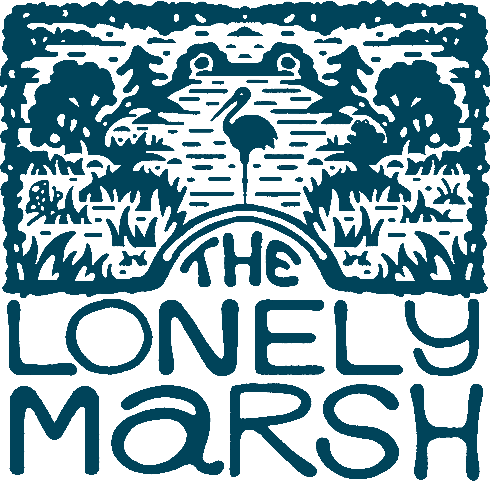

About The Lonely Marsh
There once was a Lonely Marsh in Wisconsin. The Marsh was unhappy, and it felt as though it were all alone. Though the Marsh did have one sidekick, a Green Frog. It lived amidst acres of corn and soybean fields.
Date & Time: Friday, June 19, 2026 at 2pm
Location: Leola Hall at the Sauk Prairie River Arts Center
105-9th Street, Prairie du Sac
Tickets: Free to the public, ticket reservation required.

There once was a Lonely Marsh in Wisconsin. The Marsh was unhappy, and it felt as though it were all alone. Though the Marsh did have one sidekick, a Green Frog. It lived amidst acres of corn and soybean fields.

The Marsh wasn’t always lonely. It used to have many visitors: bugs, birds, seeds… It had many Marsh neighbors. Each summer, gigantic white birds would come and lay eggs by the Marsh. They would raise a baby there, and take off in the autumn. These birds are called Whooping Cranes.

One year, many summers ago, the cranes didn’t come back. A farmer lived with the Marsh. The farmers tended the land and loved the land. Like most farmers, they didn’t have a lot of money. They decided to cultivate the soil where the Marsh sat, and made plans to drain the marsh.

When you begin to lose a thing, you run the risk of learning you love the thing. This is what happened to the farmers. The farmer saw the harm. The Green Frog convinced the Farmer of just how important the Marsh truly was. The farmer would do better with a healthier marsh. In the end, farmers relinquished some of the surrounding fields to the marsh, allowing them to fill again with water. That summer, the marsh had more visitors than it had in a long time. It was even visited by two big, beautiful, loud birds…
Julia's love affair with puppetry began before she was even aware of it. While she was filled with ineffable awe in Mr. Roger’s land of Make Believe, or giggling at one of Jim Henson’s muppet jokes, she learned what kindling emotional power a constructed world can have. After graduating from Lawrence University with a BFA in music performance, followed by years of composing music for recordings and film scores, touring with bands such as Dusk, Tenement and under her own name, Julia remembered the love for puppetry that she had forgotten.
She started with cloth hand puppets and simple set design. Eventually, under the tutelage of master puppeteer Myrek Trejtnar in Prague, CZ, she learned the art of wood carving, marionette making, and automata construction. Most recently, Julia has completed the puppet design and art direction for several video commissions from the Wormfarm Institute.
Join us on Friday, June 19, 2026 at 2pm. Free to the public!